03 / Identidade / Editorial
BORA
Identidade visual para uma focacceria de bairro, com linguagem calorosa e bem-humorada feita para transformar comida artesanal em encontro.
Direção de arte · Identidade visual · Aplicações

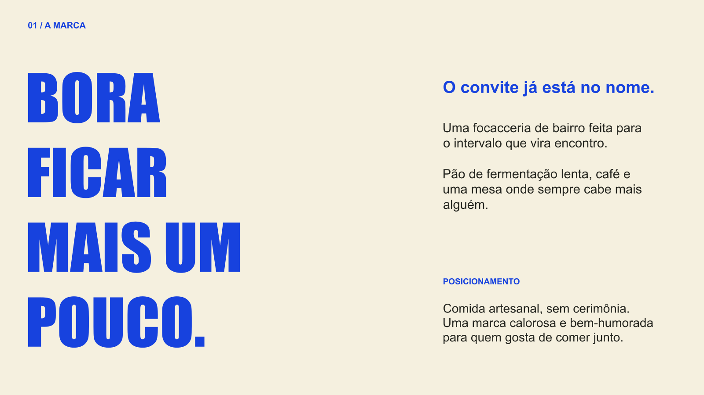
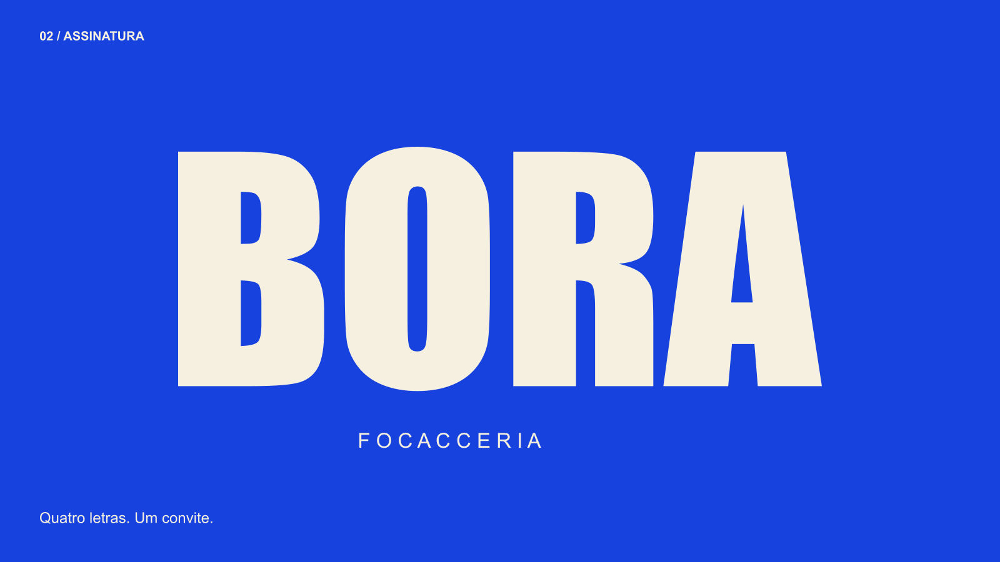
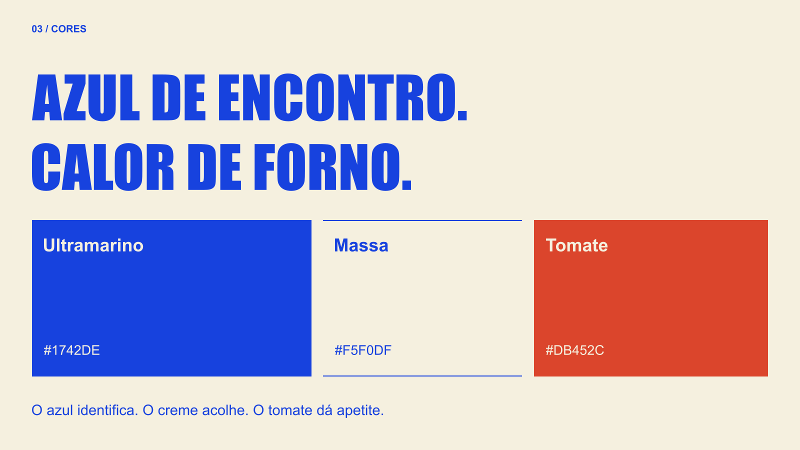
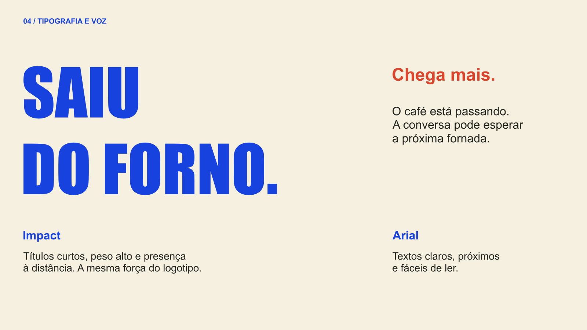
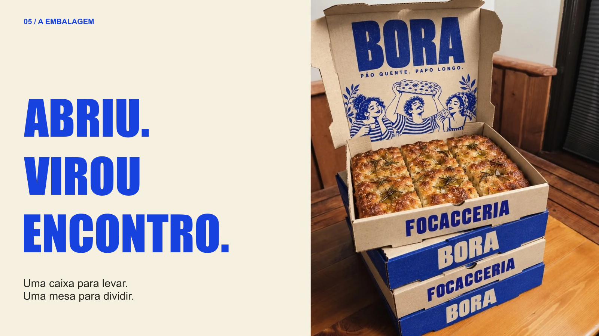
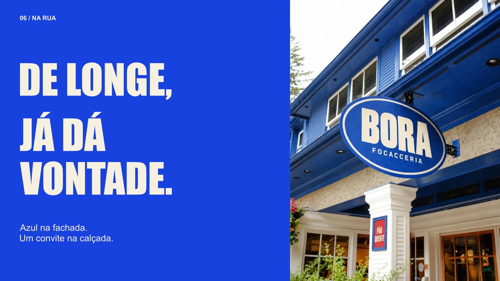
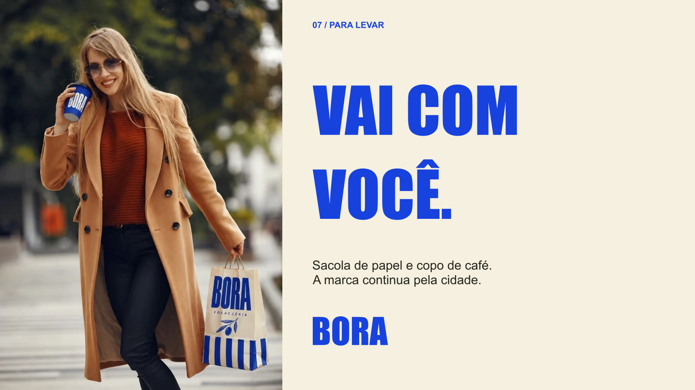
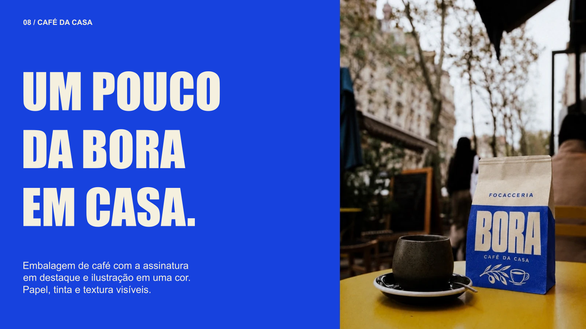
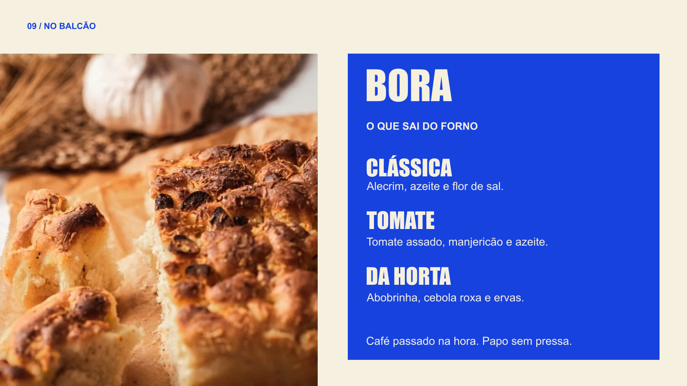
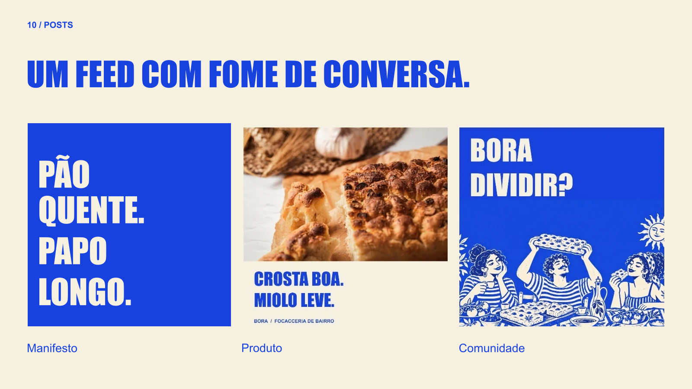
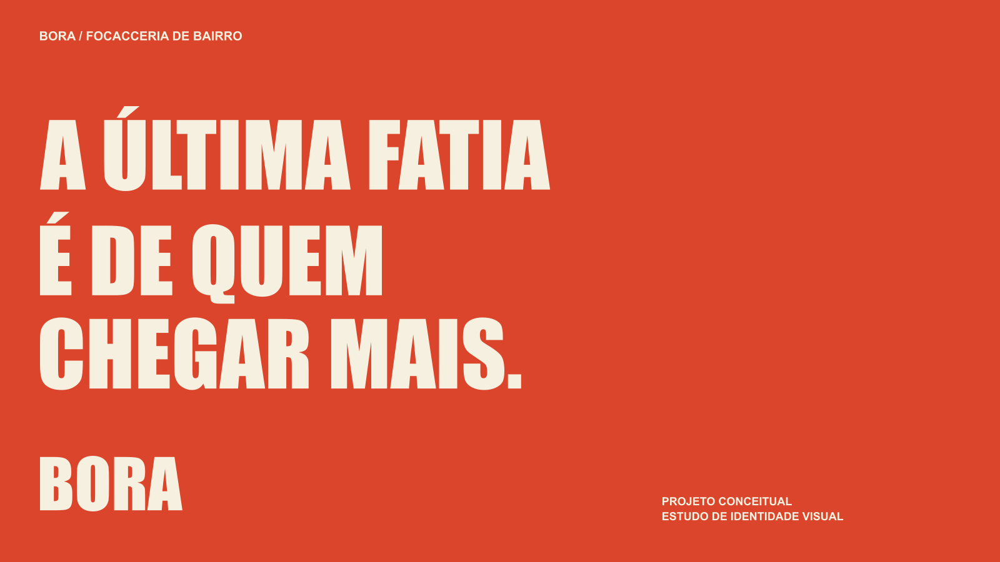